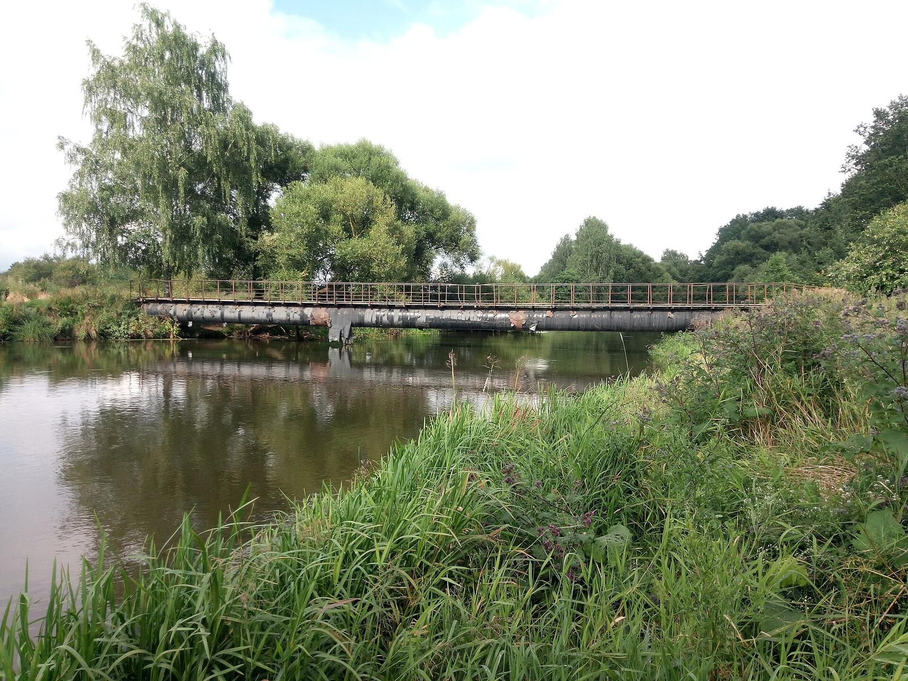

О школе
История, руководство, педагогический коллектив и школьный музей «Мой родны кут».
Официальные сведения
Полное наименование: Государственное учреждение образования «Свислочская средняя школа им. А. Г. Червякова»
На белорусском языке: Дзяржаўная ўстанова адукацыі «Свіслацкая сярэдняя школа імя А. Р. Чарвякова»
Адрес: 222823, Минская область, Пуховичский район, г. п. Свислочь, ул. Строителей, 15
УНП: 690353808
Вышестоящая организация: управление по образованию Пуховичского райисполкома (контакты).

Руководство
Телефон приёмной: +375 1713 29198
Станкевич Иван Викторович
Высшая квалификационная категория. Кабинет 216.
Ефимочкина Татьяна Сергеевна
Семенчик Елена Геннадьевна
Мазаник Анастасия Сергеевна
Жукова Виктория Сергеевна
История школы
- 1935Открыт филиал Дукорской школы — начальная трёхклассная школа, 18 учеников.
- 1937Школа становится самостоятельной начальной.
- 1944После освобождения Беларуси занятия возобновлены.
- 1959Восьмилетняя школа, 120 учащихся.
- 1966Средняя школа (Дукорская средняя школа № 2), 140 учащихся.
- 1970Переименована в Свислочскую среднюю школу.
- 20 апреля 1973Школе присвоено имя А. Г. Червякова.
- 3 октября 1974Переезд в новое здание на 370 мест.
- 1990Профильное обучение: физико-математический, филологический и естественно-научный классы.
- 1994Новое здание школы на 686 мест.
- 1997–2007Лицейские классы при БГАТУ, БГПУ им. М. Танка и БНТУ.
- 2002Создано школьное лесничество.
- 2013Ресурсный центр по профилактике ВИЧ/СПИДа и пропаганде здорового образа жизни.
- 2022–2024Профильный класс педагогической направленности.
- 2023–2024Ресурсные центры «Образовательная робототехника» и по математике, I районный фестиваль «Робомир-2024».
- 2024–2026Профильный класс инженерной направленности.
Педагогический коллектив
Качественный состав по данным официального сайта школы.
Историко-краеведческий музей «Мой родны кут»
Основатель и первый руководитель музея — учитель географии Анна Александровна Канаш. С 2009 года музеем руководит учитель географии высшей категории Елена Григорьевна Шашок.
Экспозиции:
- «Край отчий, край древний» — история посёлка и имения Засвятое;
- «Наша школа: вчера и сегодня»;
- «Его имя носит наша школа» — об А. Г. Червякове, архивные документы и воспоминания;
- «Слава вам, бойцы суровой битвы!».
Посещение: в будни по предварительной записи, в субботу с 10.00 до 14.00.
Сайт музеяНаш посёлок
Свислочь — городской посёлок в Пуховичском районе Минской области, примерно в 38 км от Минска. Он возник в 1906 году на месте имения Засвятое. В 1930-е годы здесь начало работать торфопредприятие, поставлявшее топливо для минской ТЭЦ, позже — торфо-опытная станция и опытно-промышленный завод горного воска. Нынешнее название посёлок получил в 1974 году.
Сегодня в посёлке живёт около 3,7 тысячи человек. Здесь работают экспериментальная база «Свислочь» Института природопользования НАН Беларуси, детская школа искусств, ясли-сад «Крынічка», амбулатория. Среди достопримечательностей — церковь Преподобного Серафима Саровского.